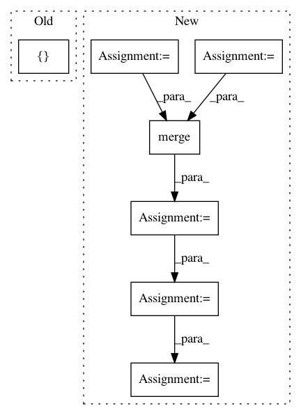

a07c82b9886d1d3fd58908c6109c4d2096760824,pyannote/audio/labeling/models.py,LSTMSequenceLabeling,design_model,#LSTMSequenceLabeling#Any#,260
Before Change
model.compile(optimizer=self.optimizer,
loss="categorical_crossentropy",
metrics=["accuracy"])
return model
After Change
dropout_U=0.0)(x)
if self.bidirectional:
backward = LSTM(name="backward_{i:d}".format(i=i),
go_backwards=True,
output_dim=output_dim,
return_sequences=True,
activation="tanh",
dropout_W=0.0,
dropout_U=0.0)(x)
// concatenate forward and backward
if self.bidirectional:
// FIXME -- check value of concat_axis=1
x = merge([forward, backward], mode="concat", concat_axis=2)
else:
x = forward
// stack dense layers
for i, output_dim in enumerate(self.dense):
x = TimeDistributed(Dense(output_dim,
activation="tanh",
name="dense_{i:d}".format(i=i)))(x)
// one dimension per class
outputs = TimeDistributed(Dense(self.output_dim, activation="softmax"))(x)
return Model(input=inputs, output=outputs)
In pattern: SUPERPATTERN
Frequency: 4
Non-data size: 7
Instances
Project Name: pyannote/pyannote-audio
Commit Name: a07c82b9886d1d3fd58908c6109c4d2096760824
Time: 2016-08-29
Author: bredin@limsi.fr
File Name: pyannote/audio/labeling/models.py
Class Name: LSTMSequenceLabeling
Method Name: design_model
Project Name: catalyst-cooperative/pudl
Commit Name: 30703a7036f9bfd58ba23c2872887f1820ef928e
Time: 2017-09-25
Author: zane.selvans@catalyst.coop
File Name: pudl/outputs.py
Class Name:
Method Name: plants_steam_ferc1_df
Project Name: QUANTAXIS/QUANTAXIS
Commit Name: 38a07735faccfe4530860f1a967e195bc70b739c
Time: 2019-04-01
Author: 40067351+zsl3034669@users.noreply.github.com
File Name: QUANTAXIS/QAARP/QAAccount.py
Class Name: QA_Account
Method Name: daily_hold
Project Name: catalyst-cooperative/pudl
Commit Name: 30703a7036f9bfd58ba23c2872887f1820ef928e
Time: 2017-09-25
Author: zane.selvans@catalyst.coop
File Name: pudl/outputs.py
Class Name:
Method Name: fuel_ferc1_df